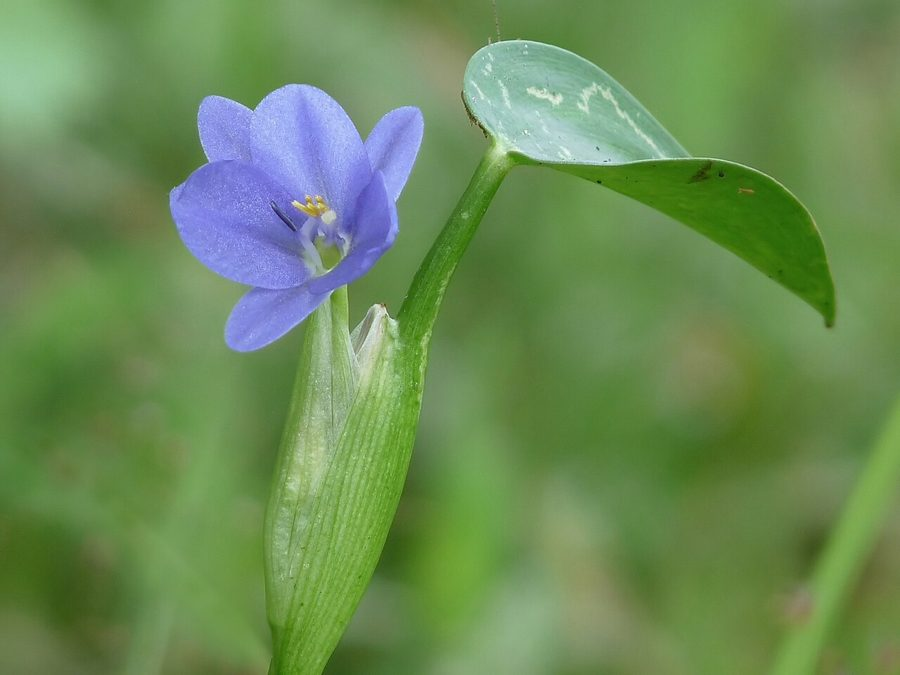

नुकियाPickerel Weed
Monochoria vaginalis · Pontederiaceae · FLR-0149

- Scientific name
- Monochoria vaginalis (Burm. f.) Kunth
- Family
- Pontederiaceae
- Hindi
- नुकिया
- Local names
- nukiya, nukia, kankaua, monochoria, pickerel weed
- Status here
- native
- Movement
- Resident, here all year
- IUCN
- not evaluated
- Review
- audited and independently read
When to look कब देखें
Expected mainly in May, June, July, August, September, October, November, December.
Uses and possibilities उपयोग और संभावनाएँ
Drawn from the documented uses in the profile below, where each is labelled traditional, current or a research lead. All uses →
नुकिया / Pickerel Weed
Monochoria vaginalis (Burm. f.) Kunth — Pontederiaceae
नुकिया (पिकेरेल वीड) — धान के खेतों में पानी में उगने वाली बेल, जिसके दिल के आकार की पत्तियाँ होती हैं और नीले-बैंगनी फूल। धान में यह खरपतवार समझी जाती है, पर गाँव की महिलाओं ने इसे खाया भी जाता है — पत्तियाँ और कंद दोनों। पोषक तत्वों से भरपूर। बरसात के दौरान और बाद में सड़कों के किनारे, नालों और तालाबों में आम दिखती है।
Quick Identification त्वरित पहचान
| Feature | Description |
|---|---|
| Plant form | Aquatic/semi-aquatic herb, 20–50 cm tall, leaves floating or emergent |
| Leaves | Heart-shaped (cordate), long-petioled, 8–20 cm across, floating or on emergent stems |
| Flowers | Blue-purple to violet, six-petaled, about 1 cm across, in a terminal spike |
| Inflorescence | Solitary, arising from centre of leaf cluster |
| Fruit | Capsule, multi-seeded |
| Stem | Spongy, inflated at water line, allowing flotation |
Field tip: In shallow water or on muddy margins, look for heart-shaped leaves and small blue-purple flowers. The leaves are striking and immediately identifiable.
हिंदी — कैसे पहचानें: दिल के आकार की बड़ी पत्तियाँ, नीले-बैंगनी फूल। पानी में तैरने वाली बेल। खेतों के किनारे कीचड़ में आम।
Morphology आकारिकी
Biometrics (wild populations in rice fields and wetlands, southeastern Asia):
| Measurement | Range |
|---|---|
| Plant height | 20–50 cm |
| Leaf length (including petiole) | 15–40 cm |
| Leaf blade length | 8–20 cm |
| Leaf blade width | 7–18 cm |
| Flower diameter | 0.8–1.2 cm |
| Flower spike length | 5–10 cm |
Root system: Adventitious roots arising from the floating or submerged stem nodes; in some forms, a small corm (underground stem) develops.
Stem: Spongy, with aerenchyma tissue (air spaces) that allows flotation. Stems are typically submerged or just at the water surface.
Leaves: Alternate, heart-shaped (cordate), with a long petiole. The blade has a prominent midrib with secondary veins emanating from the base. The leaf margin is entire.
Flowers: Regular, six-petaled, blue-purple to violet. The flowers are arranged in a terminal, unbranched spike arising from the centre of the leaf rosette. The flowers are zygomorphic.
Fruit: A three-valved capsule containing numerous seeds.
Underground structures: In some populations, a small corm develops at the base of the plant, allowing asexual reproduction.
हिंदी: दिल की आकृति की पत्ती, लंबे डंठल पर। नीले-बैंगनी फूलों की बाली। तना स्पंजी, हवादार।
Associated Species / Interactions संबंधित प्रजातियाँ
- Rice field weed: The primary ecological association is with Paddy cultivation.
- Water-associated plants: Often found with Water Hyacinth, salvinia, and other aquatic weeds in the same habitat.
- Human use: Young leaves are harvested for food.
Life Cycle / Phenology जीवन चक्र
| Month / season | Event |
|---|---|
| April–May | Corms germinate with onset of pre-monsoon showers |
| June–July | Vegetative growth; leaf production |
| July–November | Flowering; seed production |
| November–April | Plant senescence in drying fields; corms dormant in soil |
Reproduction is both by seed and asexually by corms. Seeds germinate after water logging.
हिंदी: अप्रैल-मई में अंकुरण, जुलाई-नवंबर में फूल। बीज और कंद दोनों से बढ़ता है।
Pests and Diseases कीट और रोग
- No significant pests or diseases reported.
- Occasionally subject to algal growth on the leaves in stagnant water.
Agricultural / Human Relevance कृषि प्रासंगिकता
As a weed:
- Rice field pest. Monochoria is a significant weed in wet rice cultivation, competing for nutrients and light. Heavy infestations reduce rice yield appreciably.
- Control: Manual weeding at the 2–3 leaf stage is effective. Herbicides are used in some regions.
As a food plant:
- Edible leaves. In parts of Asia (particularly in Indo-China), young leaves are harvested and eaten as a green vegetable. The leaves are nutritious, rich in vitamins and minerals.
- Edible corms. In some regions, the underground corms are eaten as a minor starchy food, similar to taro.
- Local use in UP. In eastern Uttar Pradesh, the plant is occasionally harvested by rural women for household consumption, though it is not a staple food.
Nutritional value:
- The leaves contain moderate protein (3–5% on dry basis), vitamins A and C, and minerals.
Today. The plant remains primarily a weed in rice cultivation, though its potential as a food plant is being investigated.
Research direction (a lead, not a result). Studies on the corm's yield potential as a food crop and on the plant's nutritional composition are limited. Whether wild harvesting is sustainable is an open question.
हिंदी: धान में सबसे बड़ी खरपतवार। 15-30 प्रतिशत उपज कम कर सकता है। पर पत्तियाँ और कंद खाने लायक हैं। महिलाएँ इसे तोड़कर खेत से ले आती हैं। विटामिन और खनिज से भरपूर।
Expected Locally स्थानीय रूप से अपेक्षित
Not a field record. Written from published accounts for eastern Uttar Pradesh. No confirmed local sighting yet — if you have seen it, that is what the atlas needs.
अभी तक स्थानीय पुष्टि नहीं। यह विवरण प्रकाशित स्रोतों से है, किसी अवलोकन से नहीं।
To be expected in wet rice fields and along water margins throughout Basti district. It is a common monsoon-season weed.
Distribution वितरण
Global range: Native to tropical Asia, from India through Southeast Asia to Australia and the Pacific.
In India: Widespread in rice-growing areas of the monsoon zones; common in the Gangetic plain and the northeast.
In Uttar Pradesh: Common in eastern and central districts with significant rice cultivation.
In Basti district / eastern UP: Common in wet rice fields and marsh areas.
Research Questions शोध प्रश्न
Anyone can investigate these | कोई भी इन प्रश्नों की जाँच कर सकता है
- How many leaves does a single plant produce before flowering, and how long does it take? — Mark plants; count leaves weekly; record dates.
- Are the corms actually edible, and what is their starch content compared to taro or potato? — Collect corms; cook and taste; send samples to a lab for analysis.
- Does hand-weeding monochoria at the 3–4 leaf stage eliminate it completely, or do new plants arise from forgotten corms? — Weed early; monitor for new plants; count.
- How many seeds does one flower spike produce, and what is the germination rate? — Collect mature spikes; count flowers and seeds; sow them.
- Can monochoria be promoted as an intentional food plant in kitchen gardens, and would it be more productive than potato in waterlogged soil? / क्या नुकिया को सोचे-समझे घर के बाग़ में खाने के पौधे के रूप में उगाया जा सकता है? — Grow side-by-side trials; compare yield and effort.
Similar Species मिलती-जुलती प्रजातियाँ
| Species | How to tell apart | हिंदी |
|---|---|---|
| Water Hyacinth (Eichhornia crassipes) | Much larger, with inflated petioles that look like bladders; purple or blue flowers in spikes; roots hang freely in water | जलकुंभी — बहुत बड़ा, फूले हुए डंठल |
| pickerel rush (Pontederia cordata) | Larger plant; leaves more elongate; taller flower spike; denser flower arrangement | पिकेरेल रश — बड़ा पौधा, लंबी बाली |
| Salvinia (Salvinia molesta) | Floating fern, not flowering plant; leaves are much smaller and finely divided; no flowers | साल्विनिया — छोटे, जालीदार पत्ते |
Field rule: A water plant with heart-shaped leaves and a single spike of small blue-purple flowers is monochoria.
Taxonomy & Classification वर्गीकरण
Original description. Originally described as Pontederia vaginalis by Burmann f. in 1768 and transferred to Monochoria by Kunth in 1819. The epithet vaginalis refers to the sheathing leaf base.
Subspecies. Monotypic — no subspecies currently recognised, though some local variants exist.
Family and order placement. Pontederiaceae, the pickerel family, in the order Commelinales. The genus Monochoria holds 2–3 species, all from tropical Asia.
Phylogenetic notes. Monochoria vaginalis is the most widespread species; M. korsakowii is its close relative, found in cooler parts of Asia.
IUCN status rationale. Not evaluated. Common in its native range.
Photo Gallery फोटो गैलरी
Photos needed आवश्यक फोटो
- [ ] Plant in shallow water showing floating leaves (पानी में पूरा पौधा)
- [ ] Close view of heart-shaped leaves (दिल की आकृति की पत्तियाँ)
- [ ] Flower spike detail (फूलों की बाली)
- [ ] Underground corm (कंद)
No photos yet — add field photos to media/species/monochoria/ and run node scripts/sync_photos.js.
References संदर्भ
- Burmann, N.L. f. (1768). Flora Indica. Hafniae, p. 65. [as Pontederia vaginalis; original description]
- Kunth, K.S. (1819). Enumeratio Plantarum, Vol. 4, p. 117. Cotta, Stuttgart. [transferred to Monochoria]
- Hooker, J.D. (1893). The Flora of British India, Vol. 6. L. Reeve, London.
- Indian Council of Agricultural Research (2021). Handbook of Agriculture. ICAR, New Delhi.
- Chandra, V., Shukla, D.N. & Yadav, R.P. (2011). Weed management in rice-based cropping systems. Crop Research 41(1–3): 52–64.
- GBIF Occurrence Data — Monochoria vaginalis, India (2026).
Source file: species/flora/crops_associated/monochoria.md